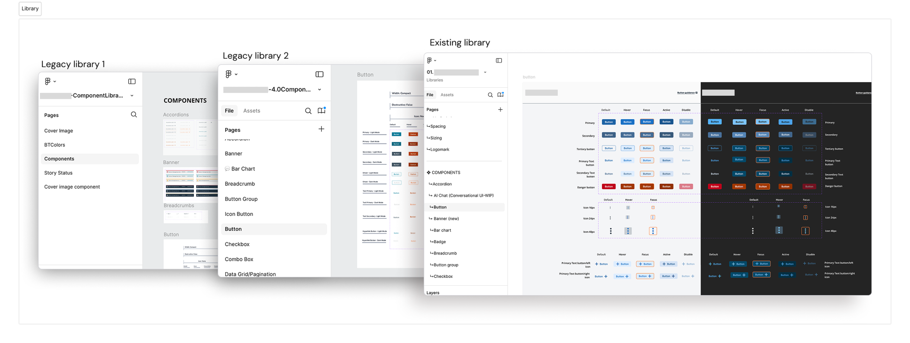
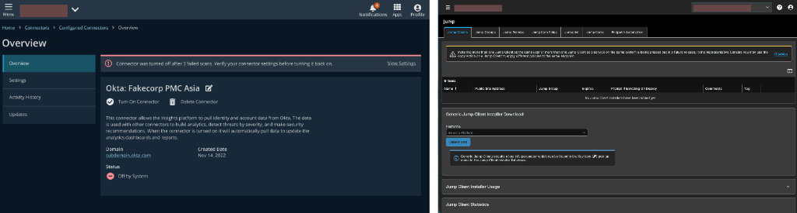
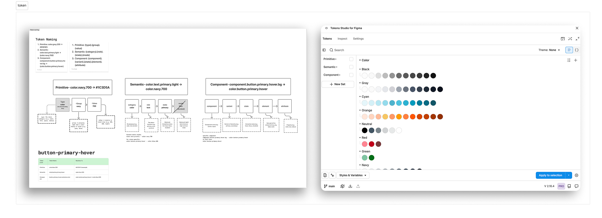
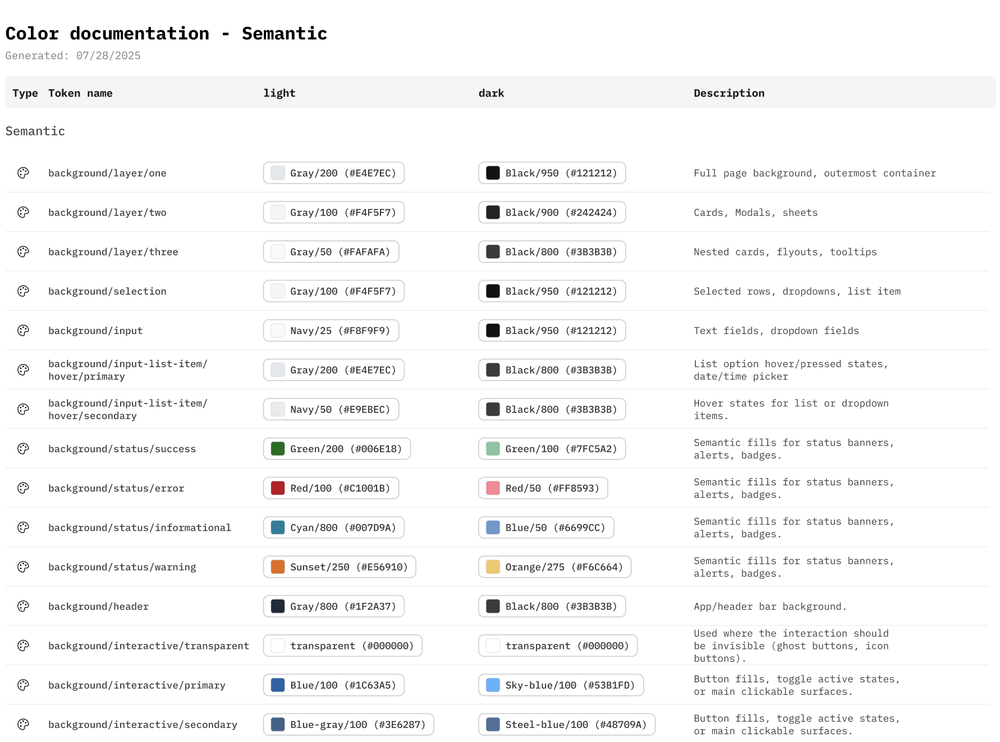
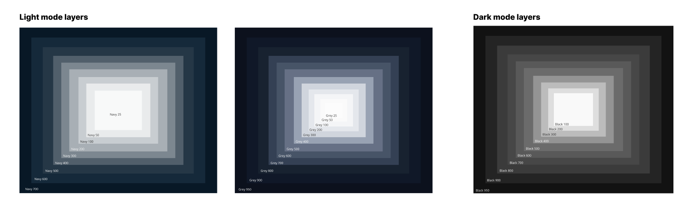
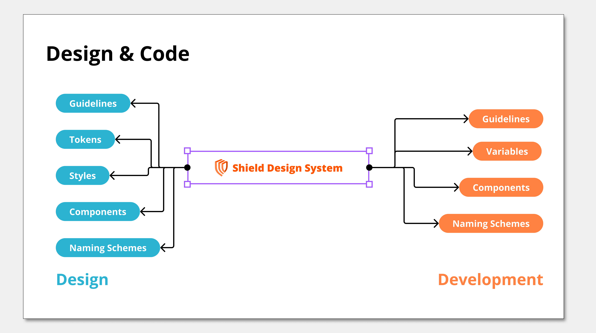
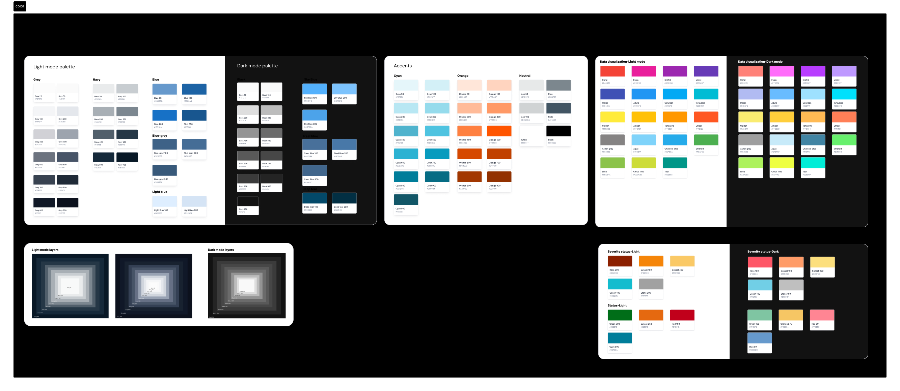
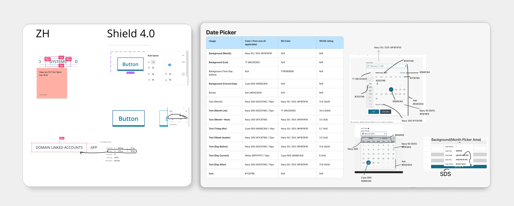
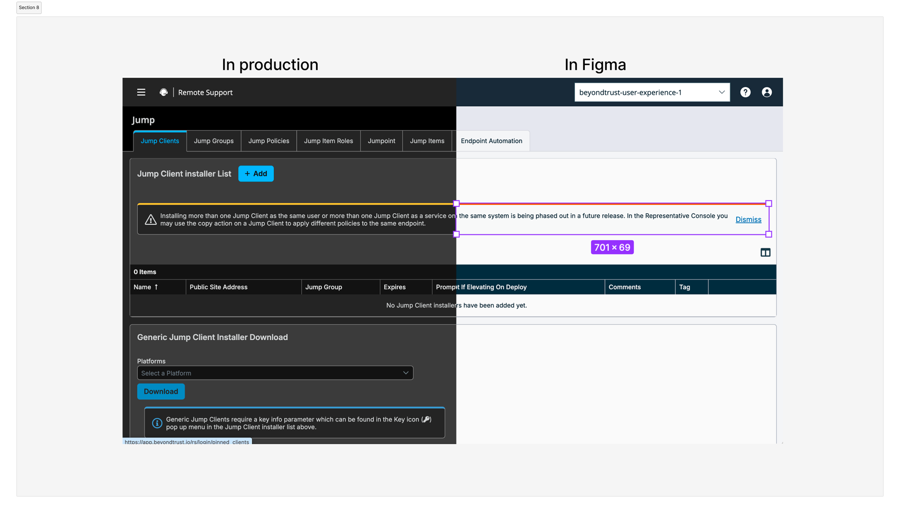
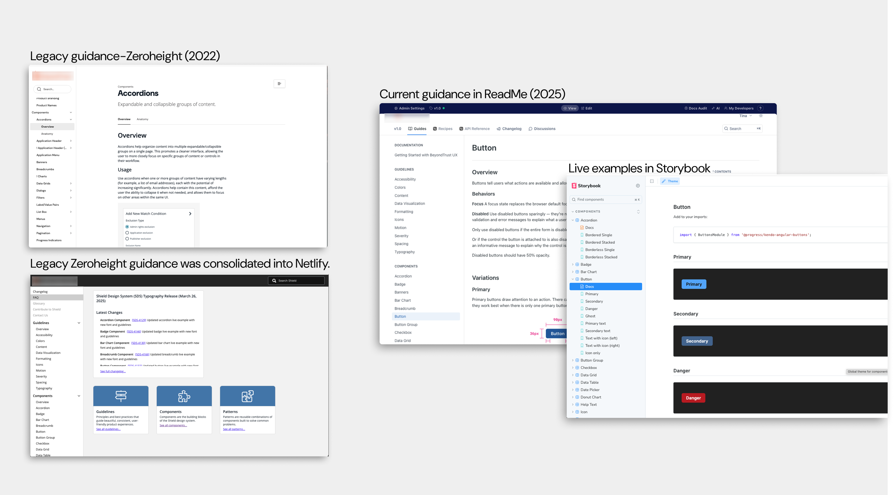

01
Case Study
Design System Rebuild
The design system existed. Nobody trusted it.
- Component detach rate dropped from 40% to <1% — engineers stopped building custom UI from scratch
- 61,000+ quarterly component insertions at peak adoption across 6 product suites
- 791 design tokens structured in a 3-layer architecture (Core → Semantic → Component) — Section 508 + WCAG AA compliance built in
An enterprise cybersecurity company selling to every US cabinet-level agency had a design system that was a shared file with no governance. Products looked different, broke in dark mode, and failed the accessibility audits required for federal procurement. I rebuilt it.
The Problem
What I walked into.
The design system existed technically. Designers detached components at a 40% rate. Products diverged visually. Dark mode was handled per-product with hardcoded values. Federal accessibility audits produced inconsistent results across 16 active VPATs, putting government contracts at real risk.
I audited the v3.0 library and found 100+ components misaligned between what Figma showed and what engineering had built. The same UI was getting rebuilt from scratch because nobody trusted the source. This wasn't a cosmetic problem — the company sells to US federal agencies under contracts requiring Section 508 compliance. The estimated contract exposure: $60M–$140M.

// Legacy Library 1 → Legacy Library 2 → unified existing library

// What was broken — 40% detach rate, hardcoded values, products diverging
What I Changed
What I owned, start to finish.
01
Audited the full component library
Classified every SDS color, radius, and typographic style as decorative, functional, or state-driven. That behavioral lens revealed where values were duplicated, misaligned, or carrying hidden intent nobody had named.
Effect: Gave the rebuild a documented foundation rather than a guess. Teams understood why components were changing, not just what was changing.
02
Resolved naming conflicts
"Tiles vs Cards" — teams used both interchangeably, which was blurring accessibility focus state requirements across products. Defined Tiles as navigation triggers, Cards as content containers.
Effect: One decision. Five products clarified. Focus state inconsistencies that had been generating accessibility flags were resolved without touching any component code.
03
Built a 3-layer token architecture
Primitive → Semantic → Component system with 791 variables. Implemented in Token Studio, synced to Figma, exported as JSON and SCSS. Theme generation for light and dark is now automated.
Effect: Dark mode stopped being a per-product engineering problem. Global visual updates — color, spacing, contrast — now happen in one place and propagate everywhere automatically.
04
Unified documentation
Migrated usage guidance, token references, and code demos into a single versioned Storybook + README. Designers and engineers read the same source.
Effect: Eliminated the "slack-based documentation" pattern where tribal knowledge lived in DMs. New team members can onboard to the system without a handholding session.
05
Introduced governance
Formal entry gates, version-controlled releases, change logs, adoption analytics dashboards tracking insertions, detaches, and usage per team.
Effect: Detach rate dropped from 40% to under 1%. The governance structure is what held the adoption — not just the quality of the components.
06
Made a deliberate architectural trade-off
Shipped component tokens pointing directly to primitives (not through a semantic layer) for legacy framework compatibility. Documented and championed the full three-layer roadmap for future implementation.
Effect: Two products on PrimeNG and custom Angular adopted immediately instead of waiting 6+ months for a full migration. The shortcut was documented, not hidden — teams knew the roadmap.

// Token Studio — Primitive, Semantic, and Component token layers in Figma

// Color token layers: Core → Semantic → Component

// Token layer diagram — how primitive values flow into semantic roles

// Token flow: Design → Design System → Development

// Color system overview — full palette, semantic roles, and dark mode coverage

// Design spec — spacing, layout, and token references for component handoff
Business Outcomes
Federal contract risk mitigated.
↓
Detach rate: 40% → under 1%. Engineers stopped rebuilding UI that already existed in the system. Hundreds of engineering hours per quarter returned to feature work.
↑
61,000+ quarterly component insertions at peak. Up from 7,000. 90% system-wide adoption across 6 products and 11 teams — driven by the governance structure, not just component quality.
✓
Federal accessibility compliance built in. Inconsistent WCAG compliance across 16 active VPATs was a documented disqualification risk during federal procurement reviews. The token system enforces AA+ contrast by design — compliance is now structural, not dependent on individual engineer awareness.
✓
94,000+ tokens in production. Light and dark mode. AA+ contrast. Section 508 alignment. The system is measurable, observable, and still running.

// Production vs Figma — parity enforced through Chromatic and Storybook

// Usage guidance — component documentation and adoption patterns across teams
What I Still Question
Adoption metrics confirm teams use the system. They don't confirm teams understand it well enough to extend it correctly without me. The gap between usage and genuine shared ownership is the unsolved problem.